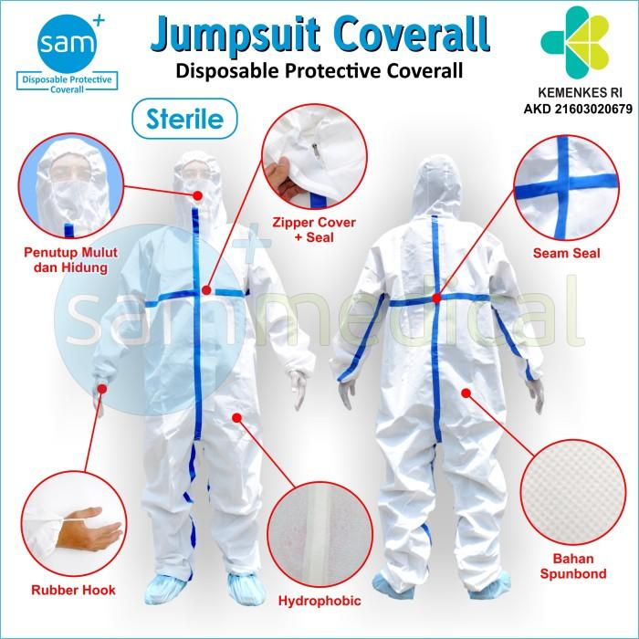
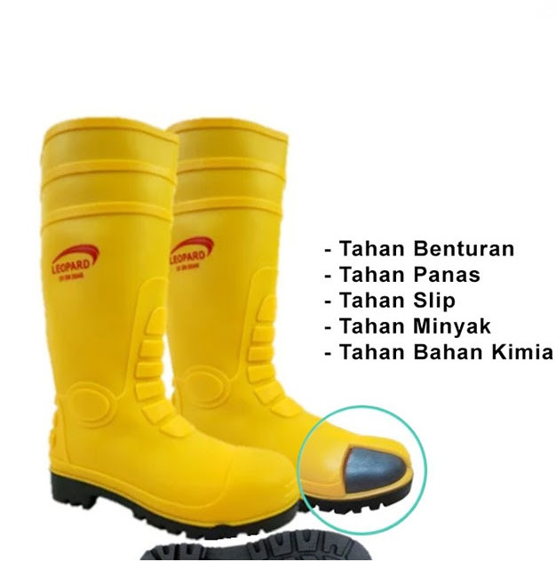

Prinsip Dasar APD
APD adalah garis pertahanan terakhir. Penggunaan APD wajib dan didasarkan pada hasil Analisis Risiko (HIRARC) di setiap area kerja.
APD Wajib Berdasarkan Area
Pemilihan APD pada tabel di bawah ini didasarkan pada analisis bahaya lingkungan (Modul 3.1) dan bahaya operasional (Modul 4.1) di setiap unit bisnis Janu Putra Sejahtera.
Area Kerja
APD Minimal Wajib
Tujuan Proteksi
Peternakan Pembibitan (Parent Stock)
Pakaian/Coverall Steril, Sepatu Boot Khusus, Masker Bedah/N95 (Double Filter), Topi/Hairnet, Sarung Tangan Steril
Memastikan Biosekuriti tingkat tinggi, melindungi dari infeksi silang dan debu/protein telur.
Peternakan Broiler (Komersial)
Masker Respirator (N95/N100), Sepatu Boot K3 (Tahan Air), Kacamata Goggle, Sarung Tangan Kerja
Melindungi dari Debu, Amonia, dan bahaya fisik operasional harian.
Peternakan Petelur
Masker Respirator (terutama saat pembersihan), Sepatu Boot K3, Sarung Tangan Pelindung, Apron (jika kontak dengan cairan pembersih)
Melindungi dari debu kalsium/pakan, bahaya fisik, dan kontak dengan bahan kimia.
Unit Penetasan Telur
Pakaian Steril (Jumpsuit), Masker Bedah/N95, Sepatu Khusus Indoor, Sarung Tangan Nitril
Memastikan Sterilitas produk, melindungi dari bio-aerosol penetasan dan larutan disinfektan.
Rumah Potong Ayam (RPA) - Area Basah
Apron Tahan Air, Sepatu Boot Anti-Slip K3, Sarung Tangan Tahan Potong (Mesh), Pelindung Mata
Melindungi dari bahaya terpotong, tergelincir, air dingin, dan percikan cairan tubuh hewan.
Gudang Pakan/Silo
Helm Keselamatan, Sepatu Safety dengan Steel Toe, Masker Debu
Melindungi dari kejatuhan benda, terperosok, dan debu pakan.
Katalog Alat Pelindung Diri (APD)
Berikut adalah deskripsi dan contoh visual dari masing-masing jenis Alat Pelindung Diri yang digunakan di lingkungan PT Mulia Farmindo Sejahtera.
Nama APD
Deskripsi & Fungsi
Ilustrasi
Pakaian/Coverall Steril (Jumpsuit)
Pakaian terusan sekali pakai (disposable) yang menutupi seluruh tubuh. Wajib untuk menjaga sterilitas area sensitif dan melindungi dari kontaminasi bio-aerosol atau partikel.

Masker Respirator (N95/N100)
Masker yang dapat menyaring minimal 95% atau 100% partikel udara yang sangat kecil, termasuk debu pakan, spora, amonia, dan bio-aerosol. Penting untuk melindungi sistem pernapasan.

Sepatu Boot K3 (Tahan Air/Khusus)
Alas kaki tinggi, biasanya berbahan karet/PVC, yang tahan air. Melindungi kaki dari cairan, kotoran, bahan kimia ringan, dan kontaminan, seringkali dengan fitur anti-slip.

Helm Keselamatan
Pelindung kepala wajib di area gudang/proyek, dirancang untuk melindungi dari benturan benda jatuh, kejatuhan material, atau cedera kepala akibat terbentur.

Sepatu Safety Steel Toe
Sepatu kerja dengan pelindung baja (steel toe) di bagian ujung. Melindungi jari-jari kaki dari bahaya terjepit, tertimpa benda berat, dan tusukan.

Kacamata Goggle / Pelindung Mata
Melindungi mata dari debu, percikan cairan kimia/disinfektan, bio-aerosol, atau serpihan partikel saat bekerja (misalnya saat pembersihan atau pengerjaan mesin).

Sarung Tangan Steril/Nitril
Sarung tangan sekali pakai, penting untuk prosedur biosekuriti tinggi (Steril) atau untuk perlindungan dari bahan kimia dan kontaminasi ringan (Nitril).

Apron Tahan Air/Pelindung
Celemek pelindung dada hingga paha (biasanya PVC) untuk menjaga pakaian kerja dari percikan air, cairan tubuh hewan, darah, atau bahan kimia pembersih.

Sarung Tangan Tahan Potong (Mesh)
Sarung tangan yang terbuat dari jaring baja (mesh) atau bahan serat tahan potong tingkat tinggi. Wajib digunakan di area pemotongan daging (RPA) untuk mencegah luka fatal.

Topi/Hairnet
Penutup kepala yang berfungsi untuk mencegah rambut jatuh ke produk atau area steril, sekaligus melindungi rambut dari kotoran di area kerja.

Masker Debu
Masker sekali pakai untuk perlindungan dari partikel debu non-toksik (seperti debu pakan atau kalsium), biasanya digunakan di area dengan risiko debu rendah hingga sedang.